Main Features
Discover the key features that make NovaBot powerful and easy to use.
Welcome to the MU NovaBot — here you can find setup instructions, configuration options, and all the tools you need for NovaBot automation in MU Online. Designed for MU Monarch, MU Ascension, and MU Immortal — tested and verified on the latest builds.
Discover the key features that make NovaBot powerful and easy to use.
